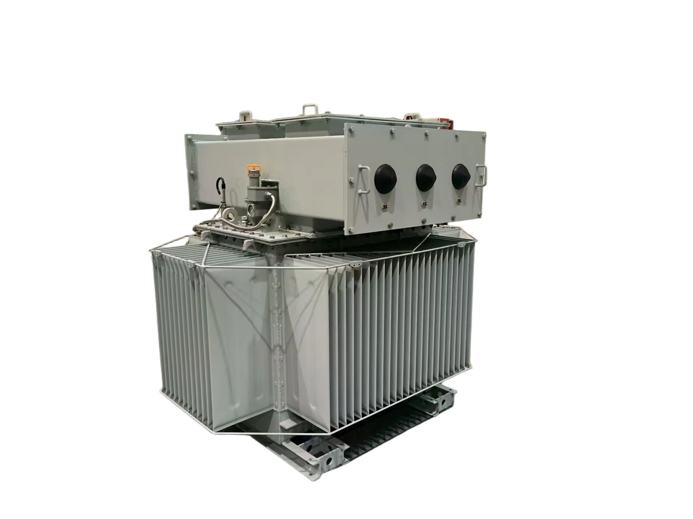
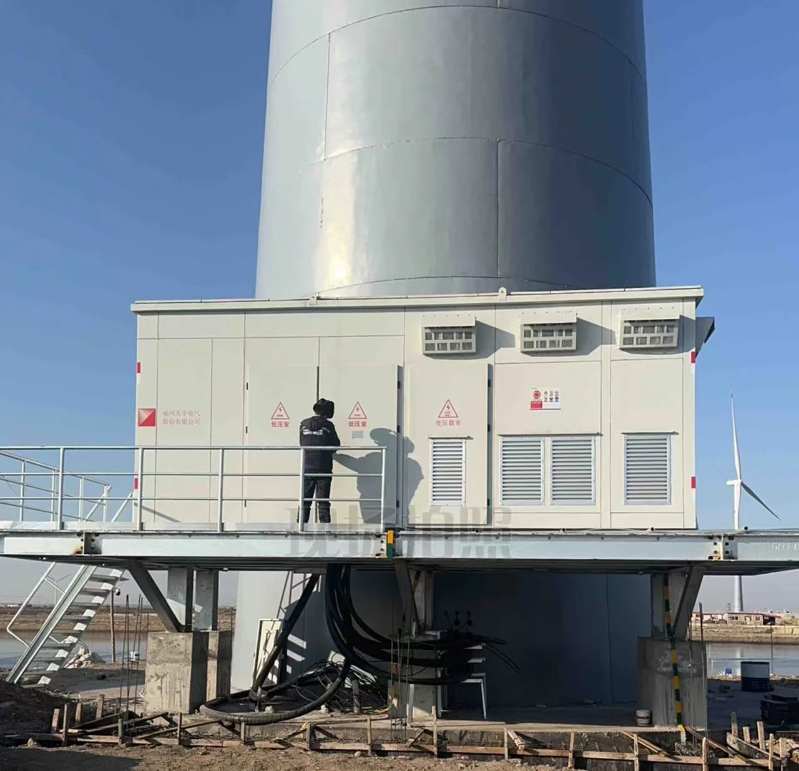
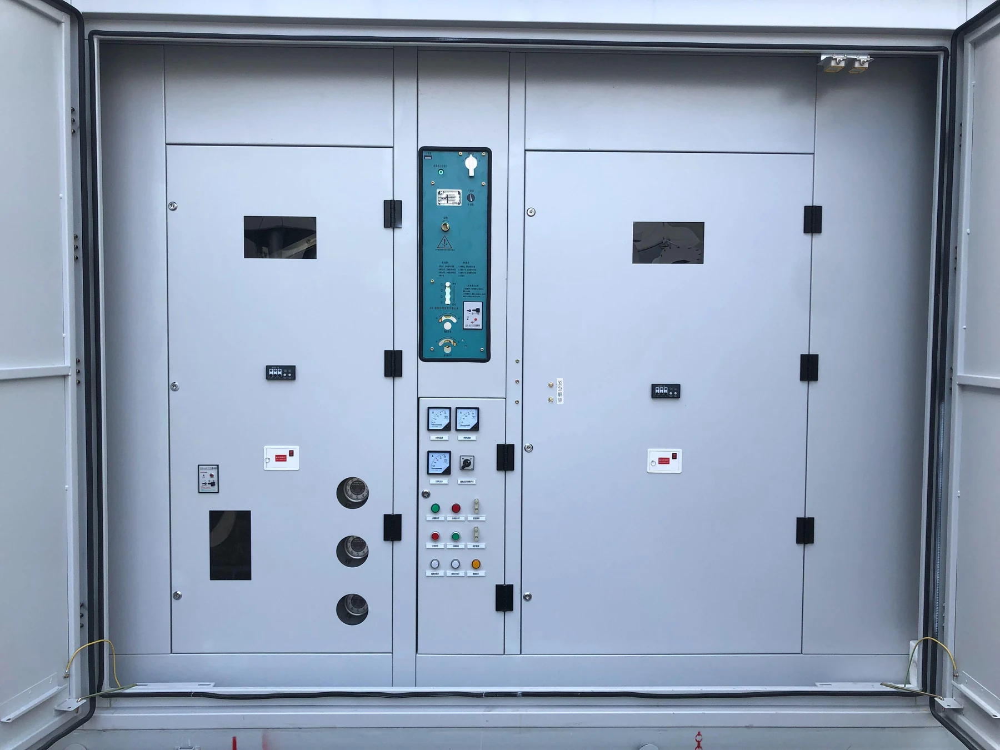
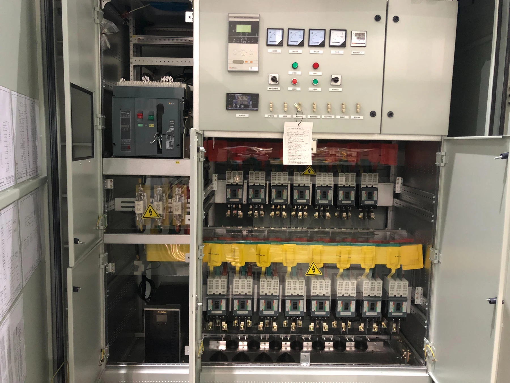

Manufacturing / Testing

TIANYU ELECTRIC
Product Portfolio
Tianyu Electric supplies transformers and prefabricated substations for utility, renewable-energy, industrial and infrastructure applications. The portfolio covers distribution transformers, high-voltage power transformers, cast-resin dry-type transformers, prefabricated substations and pad-mounted transformer solutions.
Product pages present series ratings, tested reference configurations, certificates and test reports, engineering drawings and project applications together with the technical information required for quotation.
Company Overview
Founded in 1996, Fuzhou Tianyu Electric Co., Ltd. manufactures transformers, prefabricated substations, switchgear and primary electrical equipment for utility, renewable-energy, industrial and infrastructure projects. The company operates as a wholly-owned subsidiary of XJ Group Corporation under China Electrical Equipment Group Co., Ltd.
Tianyu combines product engineering, manufacturing, testing and project documentation for medium- and high-voltage applications. The current export portfolio includes energy-efficient distribution transformers, 110–220 kV power-transformer references, SCB18 cast-resin dry-type transformers, 35 kV prefabricated substations and pad-mounted transformer solutions.
Transformer, prefabricated substation, switchgear and primary electrical equipment solutions for utility, renewable, industrial and infrastructure projects.
Wholly-owned subsidiary of XJ Group Corporation under China Electrical Equipment Group Co., Ltd.
A southern manufacturing base for primary electrical equipment of China Electrical Equipment Group Co., Ltd.

Manufacturing & Testing
Transformer manufacturing covers magnetic-core processing, coil winding, insulation preparation, drying, active-part assembly, enclosure integration and final inspection. Process control at each stage supports the required losses, temperature rise, insulation performance, acoustic performance and mechanical strength.
Routine factory tests are completed according to the applicable product specification. Independent type-test reports and third-party certificates are identified separately by model and report number in the relevant product sections.
Manufacturing / Testing

Manufacturing / Testing
Manufacturing / Testing

Manufacturing / Testing
Manufacturing / Testing
Manufacturing / Testing
Third-party type tests and certifications are identified separately from in-house manufacturing and routine-test capability.
Quality & Certification
Independent certificates and test reports are identified by tested model, rating and report number. Product configurations are confirmed against the applicable technical specification and destination-market requirements.

TÜV · CERTIFICATE

TYPE TEST · IEC

EFFICIENCY · TÜV

CE · ECODESIGN
QUALITY & CERTIFICATION

TÜV · CERTIFICATE

TYPE TEST · IEC

EFFICIENCY · TÜV

CE · ECODESIGN
Distribution Transformer
Fuzhou Tianyu Electric supplies S(B)20 / S(B)22 oil-immersed distribution transformers for utility, industrial and commercial distribution systems. The series covers voltage levels up to 22 kV and design capacities up to 4,000 kVA, with sealed oil-immersed construction, ONAN cooling, low-loss magnetic-core design and low-noise configurations.
The product platform supports project-specific voltage ratios, tap ranges, impedance, terminal arrangements, accessories and monitoring requirements. Energy-efficient configurations are available for applications requiring controlled losses and long-term outdoor operation.


The S(B)20 / S(B)22 series is designed for medium-voltage distribution duties with sealed construction, low losses, low noise and configurable electrical interfaces.
PRODUCT DETAILS
The S(B)20 / S(B)22 series is available for systems up to 22 kV and capacities up to 4,000 kVA. Sealed oil-immersed construction limits contact between transformer oil and outside air, while ONAN cooling and low-loss core design support efficient long-term operation in utility and industrial distribution networks.
Tested reference configurations include S-M-630/22-Tier2 and S-M-1600/22-Tier2, both rated 22 / 0.42 kV. The available documentation includes TÜV Certificates of Conformity, IEC complete type-test reports, efficiency test reports and CE / Ecodesign verification for the identified reference models.
Rated voltage, tapping range, impedance, accessories, monitoring, cable or bushing interfaces and site conditions can be configured according to the project specification. Final technical parameters and drawings are confirmed before manufacturing.
| Model | Rated Power | Rated Voltage |
|---|---|---|
| S-M-1600/22-Tier2 | 1600 kVA | 22 / 0.42 kV |
| S-M-630/22-Tier2 | 630 kVA | 22 / 0.42 kV |
The table follows the current export project workbook and keeps each reference with the product family under which it was supplied or recorded.
| Project Reference | Application | Industry | Country | Project Scale |
|---|---|---|---|---|
| Tay Ninh Cement Milling Plant 2 | Industrial | Cement | — | — |
| Neikeng Phase I Transformer Project | Industrial | Industrial | — | — |
| Wanhua Ningbo 450 Substation Grade 1 Efficiency Transformer | Industrial | Chemical | China | — |
| SCC Cement Plant 6000 TPD | Industrial | Cement | — | 6000 TPD |
| Yamama 6000 TPD Clinker Plant Project | Industrial | Cement | — | 6000 TPD |
| Wanhua Chemical Haiyang Phase II & III Distribution Project | Industrial | Chemical | China | — |
CERTIFICATES & TEST REPORTS


CERTIFICATES & TEST REPORTS


ENGINEERING DRAWINGS


ENGINEERING DRAWINGS


ENGINEERING DRAWINGS


European Market Evidence
TÜV · CERTIFICATE
TYPE TEST · IEC
EFFICIENCY · TÜV
CE · ECODESIGN
TÜV · CERTIFICATE
TYPE TEST · IEC
EFFICIENCY · TÜV
CE · ECODESIGN
EU conformity remains configuration-specific. The catalog presents the evidence attached to the tested reference models rather than claiming blanket certification for the entire configurable series.
Power Transformer
Fuzhou Tianyu Electric supplies three-phase oil-immersed power transformers for main substations, grid interconnection and large industrial power systems. The documented reference range covers 110 kV, 132 kV and 220 kV equipment, with tested capacities from 50 MVA to 240 MVA.
Each transformer is engineered to the project electrical system and site conditions. Voltage ratio, vector group, impedance, tap-changing range, insulation level, guaranteed losses, cooling arrangement, monitoring, accessories and transport limits are confirmed in the technical specification.


Oil-immersed main transformers for utility substations, renewable-energy interconnection and major industrial power systems, with project-specific electrical and mechanical design.
PRODUCT DETAILS
Tianyu high-voltage power transformers are designed for main-substation and grid-interconnection service. Tested reference configurations include 50 MVA / 110 kV, 150 MVA / 132 kV and 240 MVA / 220 kV transformers, providing documented examples across the current high-voltage product range.
Transformer design is developed around the project system parameters. Impedance, on-load tap changing, insulation coordination, cooling, losses, temperature-rise limits, monitoring, protection interfaces and transport requirements are incorporated into the final technical schedule and approved drawings before production.
| Model | Rated Power | Rated Voltage |
|---|---|---|
| SZ22-50000/110-NX1 | 50 MVA | 110 kV |
| SFZ-150000/132 | 150 MVA | 132 kV |
| SSZ20-240000/220 | 240 MVA | 220 kV |
| SSZ22-240000/220-NX1 | 240 MVA | 220 kV |
The table follows the current export project workbook and keeps each reference with the product family under which it was supplied or recorded.
| Project Reference | Application | Industry | Country | Project Scale |
|---|---|---|---|---|
| BCL Hattar Line 2 7200 TPD Cement Plant | Industrial | Cement | Pakistan | 7200 TPD |
| Atlantic Industrial Park 132 kV Substation | Utility Grid | Industrial Park | Nigeria | 132 kV |
| Long Son Company Cement Grinding Project | Industrial | Cement | Vietnam | — |
| Methanol Dayyer Mobile Substation Export Project | Infrastructure | Chemical | United Arab Emirates | — |
| Feicheng 100 MW-Class Advanced Compressed Air Energy Storage Station Phase II | Energy Storage | Energy Storage | China | 100 MW-class |
| Xi'an Metro Lines 8, 10 and 15 Main Substations | Infrastructure | Rail Transit | China | — |
CERTIFICATES & TEST REPORTS


ENGINEERING DRAWINGS


ENGINEERING DRAWINGS


Dry-Type Transformer
Fuzhou Tianyu Electric supplies SCB18 cast-resin dry-type transformers for indoor distribution, commercial buildings, hospitals, charging infrastructure, industrial facilities and public infrastructure. The series uses cast-resin insulation and supports AN or AF cooling according to the selected configuration.
The current tested references are SCB18-1000/10-NX1 and SCB18-2500/10 at 10 kV. Enclosure, ventilation, temperature monitoring, vector group, cable interfaces and installation conditions can be configured to suit the project.


SCB18 cast-resin transformers provide oil-free indoor distribution with configurable cooling, enclosure and temperature-monitoring arrangements.
PRODUCT DETAILS
The SCB18 series is designed for indoor distribution applications requiring oil-free insulation, low maintenance and compact installation. Cast-resin construction supports use in commercial, healthcare, infrastructure and industrial environments where fire performance and equipment cleanliness are important.
Tested reference configurations include SCB18-1000/10-NX1 and SCB18-2500/10. Project options include AN or AF cooling, protective enclosures, temperature monitoring and fan control, vector group, cable interfaces and site-specific installation requirements.
| Model | Rated Power | Rated Voltage |
|---|---|---|
| SCB18-1000/10-NX1 | 1000 kVA | 10 kV |
| SCB18-2500/10 | 2500 kVA | 10 kV |
The table follows the current export project workbook and keeps each reference with the product family under which it was supplied or recorded.
| Project Reference | Application | Industry | Country | Project Scale |
|---|---|---|---|---|
| Yinchuan Charging Infrastructure Phase II Lot 2 | Infrastructure | Charging Infrastructure | China | — |
| Baihong Nylon Texturing Workshop Phase I | Industrial | Industrial | China | — |
| Zhangzhou Hospital | Infrastructure | Healthcare | China | — |
| Anhui Xinyi Photovoltaic Glass Lines BA-D | Industrial | Photovoltaic Manufacturing | China | — |
| Fujian Ruian Electric Power Construction Project | Utility Grid | Power Construction | China | — |
| Zhenjiang Chunen Dry-Type Transformer Framework | Industrial | Industrial | China | — |
CERTIFICATES & TEST REPORTS


ENGINEERING DRAWINGS


ENGINEERING DRAWINGS


Prefabricated Substation
The European-Type Prefabricated Substation integrates high-voltage primary equipment, a dry-type transformer and low-voltage distribution equipment in a factory-assembled outdoor enclosure. The series is available for primary voltages of 6 kV, 12 kV and 35 kV, with secondary-voltage configurations including 400 V, 690 V, 800 V and 1,140 V.
Design capacity extends up to 12,500 kVA. Protection, metering, monitoring, auxiliary power, cable entry and remote-operation functions can be integrated according to the project single-line diagram and site requirements.


A factory-assembled 35 kV-class substation integrating high-voltage equipment, a dry-type transformer and low-voltage distribution in one outdoor package.
PRODUCT DETAILS
Tianyu European-Type Prefabricated Substations combine high-voltage primary equipment, a dry-type transformer and low-voltage distribution in a single factory-assembled enclosure. The dry-type transformer configuration is suitable for renewable-energy, storage, urban-distribution and environmentally sensitive projects where transformer-oil leakage is to be avoided.
The series covers primary voltages up to 35 kV and capacities up to 12.5 MVA. Type-tested reference configurations include 6.3 MVA, 10 MVA and 12.5 MVA units. Switchgear scheme, protection, metering, monitoring, auxiliary power, cable entry and enclosure arrangement are engineered to the project specification.
| Model | Rated Power | Rated Voltage |
|---|---|---|
| YB-40.5/1.14-6300 | 6300 kVA | 35 kV |
| YB-40.5/1.14-10000 | 10000 kVA | 35 kV |
| YB-40.5/1.14-12500 | 12500 kVA | 35 kV |
The table follows the current export project workbook and keeps each reference with the product family under which it was supplied or recorded.
| Project Reference | Application | Industry | Country | Project Scale |
|---|---|---|---|---|
| CR Power Laohekou 130 MW Wind Power Project | Renewable Energy | Wind | China | 130 MW |
| Shandong Rizhao 200 MW Energy Storage Project | Energy Storage | Energy Storage | China | 200 MW |
| Huaneng Weichang 200 MW Wind Power Project | Renewable Energy | Wind | China | 200 MW |
| Yinchuan Charging Infrastructure Project | Infrastructure | Charging Infrastructure | China | — |
| Three Gorges Jiangsu Taizhou Hailing 100 MW Fishery-Solar Project | Renewable Energy | Solar | China | 100 MW |
| Huaneng Laoting 125 MW Wind Power Project | Renewable Energy | Wind | China | 125 MW |
CERTIFICATES & TEST REPORTS


ENGINEERING DRAWINGS


ENGINEERING DRAWINGS


Prefabricated Substation
The Compact Prefabricated Substation combines high-voltage equipment, an oil-immersed transformer and low-voltage distribution in a compact outdoor package. The series is available for systems up to 35 kV and design capacities up to 15,000 kVA.
The product is developed for solar, wind, energy-storage, utility and industrial projects requiring high integration and reduced site installation work. Protection, monitoring, cable interfaces, corrosion protection, ventilation and enclosure arrangements are configured to the installation environment.


A compact outdoor substation integrating high-voltage equipment, an oil-immersed transformer and low-voltage distribution for renewable-energy, utility and industrial projects.
PRODUCT DETAILS
Tianyu Compact Prefabricated Substations integrate high-voltage equipment, an oil-immersed transformer and low-voltage distribution in a factory-assembled outdoor enclosure. The design supports renewable-energy, utility and industrial projects where high capacity, compact footprint and reduced field assembly are required.
The series extends up to 15 MVA, with type-tested reference configurations at 10 MVA and 12.5 MVA. Corrosion protection, sealing, ventilation, structural loading, protection level, monitoring, cable entry and auxiliary systems are selected according to the project site and electrical scheme.
| Model | Rated Power | Rated Voltage |
|---|---|---|
| YB-40.5-10000 | 10000 kVA | 35 kV |
| YB-40.5/1.14-12500 (GY) | 12500 kVA | 35 kV |
The table follows the current export project workbook and keeps each reference with the product family under which it was supplied or recorded.
| Project Reference | Application | Industry | Country | Project Scale |
|---|---|---|---|---|
| Yunnan Zhaotong Xiaozhai 350 MW Solar Project | Renewable Energy | Solar | China | 350 MW |
| Three Gorges Dongshan Xingchen 180 MW Offshore Solar Project | Renewable Energy | Offshore Solar | China | 180 MW |
| Sunshare Nambala 100 MW Solar Project | Renewable Energy | Solar | Zambia | 100 MW |
| Shanghai Lingang 500 MW Offshore Solar Project | Renewable Energy | Offshore Solar | China | 500 MW |
| CMOC Mining Area 500 MW Solar Project | Renewable Energy | Mining / Solar | Democratic Republic of the Congo | 500 MW |
| Luneng Ruoqiang 2 GW Solar Power Project | Renewable Energy | Solar | China | 2 GW |
CERTIFICATES & TEST REPORTS


ENGINEERING DRAWINGS


ENGINEERING DRAWINGS


Combined Transformer
The Pad-Mounted Transformer integrates the transformer body, high-voltage load switching and fuse protection in a compact outdoor assembly. The series is developed for renewable-energy collection systems and distribution projects where a high degree of integration and reduced site footprint are required.
Series capacity extends up to 4,500 kVA. The ZGS22-4000/35/0.8 tested reference is rated 4,000 kVA at 37 / 0.8 kV and is supported by Type Test Report 24XB0336-S. Cable arrangement, switching scheme, protection and enclosure configuration are selected according to the project.


An integrated outdoor transformer package combining the transformer, high-voltage switching and fuse protection for renewable-energy and compact distribution systems.
PRODUCT DETAILS
Tianyu Pad-Mounted Transformers combine the oil-immersed transformer, high-voltage load switch and fuse protection within a compact outdoor assembly. The integrated arrangement reduces separate field equipment and supports solar, storage and distribution applications.
The ZGS22-4000/35/0.8 reference configuration is rated 4,000 kVA at 37 / 0.8 kV. Type Test Report 24XB0336-S references the IEC 60076 series and IEC/IEEE 60076-16 and includes short-circuit and lightning-impulse testing, IP65 protection for the high- and low-voltage compartments, IP68 for the transformer section and high-altitude evaluation using a 5,000 m reference condition.
Final cable entry, switching scheme, fuse arrangement, protection, enclosure and site interfaces are confirmed according to the project electrical design and installation conditions.
| Model | Rated Power | Rated Voltage |
|---|---|---|
| ZGS22-4000/35/0.8 | 4000 kVA | 37 / 0.8 kV |
The table follows the current export project workbook and keeps each reference with the product family under which it was supplied or recorded.
| Project Reference | Application | Industry | Country | Project Scale |
|---|---|---|---|---|
| Pianguan Jinlin 100 MW Solar + Storage Project | Renewable Energy | Solar / Storage | China | 100 MW |
| Qianxi Hongjiadu 150 MW Agriculture-Solar Project | Renewable Energy | Solar | China | 150 MW |
| Shexian 150 MW Solar Power Project | Renewable Energy | Solar | China | 150 MW |
| Qinhuangdao Juxing 200 MW Solar Project | Renewable Energy | Solar | China | 200 MW |
| Xinze Kaiping 150 MW Solar Project | Renewable Energy | Solar | China | 150 MW |
| CHN Energy Zhoushan Putuo Dengbu Island 213 MWp Fishery-Solar Project | Renewable Energy | Solar | China | 213 MWp |
Engineering & Customization
Transformer products are configurable, but customization is not unlimited substitution. A tested platform gives engineering a known starting point, while the final design is adjusted to the electrical system, load, environment, standards and interfaces of the project. Some changes, such as accessories or monitoring, may be relatively local; others, such as voltage, impedance, core design, harmonic duty, insulation level or loss target, can affect the fundamental design and the relevance of existing test evidence.
For this reason Tianyu reviews the project specification before freezing the technical schedule. The objective is to identify which requirements can remain within an established platform, which require a new engineered configuration and which may require additional verification for the destination market or the customer's own technical specification.
Changes that affect rated performance, losses, insulation, winding arrangement, magnetic design or applicable market requirements must be reviewed for their impact on testing and compliance.
RFQ Guide
A transformer quotation becomes more accurate as soon as the electrical duty and site conditions are defined. Capacity and voltage alone are rarely sufficient for a final technical offer. Frequency, vector group, impedance, tapping, insulation levels, loss requirements, ambient temperature, altitude, installation method, accessories and the governing standard can all change the design and price.
When available, a single-line diagram, tender specification, load profile, harmonic information and cable-interface drawing should be supplied with the inquiry. These documents allow engineering to compare the requirement against an existing platform and reduce avoidable revisions later in the project.
Project Support
Product-family and reference-model matching against project ratings.
Technical schedules, drawings and available test evidence organized for project review.
Production and routine-test documentation prepared for the agreed order scope.
Packing and technical document handover aligned to the project delivery plan.